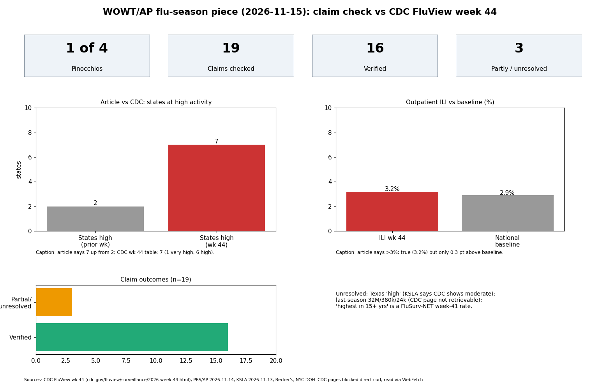

Fact check: "Flu season is off to a very early start" (WOWT, AP, 2026-11-15)

Mostly accurate: 1 Pinocchio, with three claims not fully confirmed
The piece is the AP story of Nov 14, 2026 and its core numbers match CDC FluView week 44 (ending Nov 7, 2026): 7 jurisdictions at high or very high activity (1 very high, 6 high), 3.2% of ILINet visits for influenza-like illness (baseline 2.9%), and at least 2.6 million illnesses, 36,000 hospitalizations and 2,100 deaths. CDC also says activity is higher than typical for this time of year.
- Unresolved: the named state list (incl. Texas). The CDC page gives counts only; KSLA (Nov 13) says CDC shows Texas at moderate. I could not read the CDC map directly.
- Unresolved: last season's "at least 32 million illnesses, 380,000 hospitalizations, 24,000 deaths". The CDC burden page was not retrievable (404/403). The week 25 report confirms 30,571 lab-confirmed FluSurv-NET hospitalizations and 184 pediatric deaths for 2025-26, consistent in direction only.
- Context that could mislead: national ILI is only 0.3 points above baseline and 11.3% of lab specimens are positive; "surging" rests on a state-activity count. Durbin's "highest in 15+ years" is a FluSurv-NET rate for week 41 (2.1 per 100,000), early-season only, and CDC says it is unclear whether the season will be worse. The piece does state that caveat.
- Verified: 98.9% of subtyped A viruses are H1N1pdm09; CDC antigenic data show the vaccine recognizes most (95.2% of H1N1 well-recognized), matching Pekosz. "Three kinds of flu virus" matches the trivalent vaccine (H1N1, H3N2, B/Victoria). NYC "most intense in 20 years" is an attributed official characterization; NYC DOH reported record weekly cases (32,000+ week ending Dec 20, 2025, most since 2005).
- Not checked: personal quotes from Lopez, Iovine, Durbin, Pekosz beyond the briefing coverage (Durbin/Pekosz briefing Oct 29 confirmed via secondary coverage). The Moderna item is only a linked headline; a Phase 3 result (26.6% relative efficacy) and a WashU durability study support direction, but "longer protection" is a hypothesis.
Claim table
| Claim | Answer | Confidence |
|---|
| 7 states high, up from 2 | Count verified (7); prior-week 2 per AP only | medium |
| >3% visits ILI | True, 3.2% | high |
| Louisiana worst | Supported (KSLA, CDC map reporting) | medium |
| Higher than usual at this time | True per CDC | high |
| Hospitalization rate highest early in 15+ years | Supported, qualified (week 41, FluSurv-NET) | medium |
| 2.6M / 36,000 / 2,100 | True | high |
| States list incl. Texas | Partly unresolved | low |
| Last season 32M/380k/24k | Not retrieved | low |
| H1N1 dominant; vaccine matches | True | high |
| Season over by late March; surged late Dec | Consistent with CDC (low by June) | medium |
Sources
- https://www.cdc.gov/fluview/surveillance/2026-week-44.html
- https://cdc.gov/fluview/surveillance/2026-week-25.html
- https://pbs.org/newshour/health/the-u-s-flu-season-is-off-to-a-very-early-start-its-hitting-the-south-and-west-now
- https://www.ksla.com/2026/11/13/louisiana-leads-nation-flu-activity-cdc-map-shows/
- https://www.beckershospitalreview.com/public-health/how-flu-admissions-compare-to-past-seasons
- https://www.nyc.gov/site/doh/about/press/pr2026/new-respiratory-virus-data-release-01082026.page
- CIDRAP / NEJM coverage of Moderna mRNA-1010 Phase 3